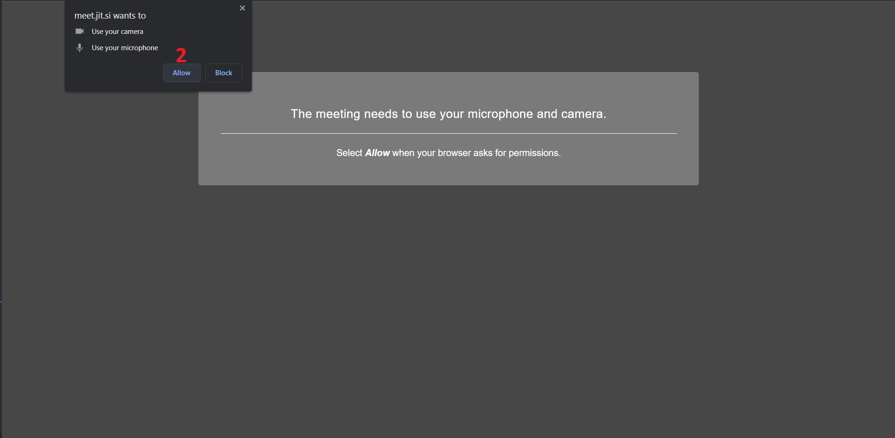
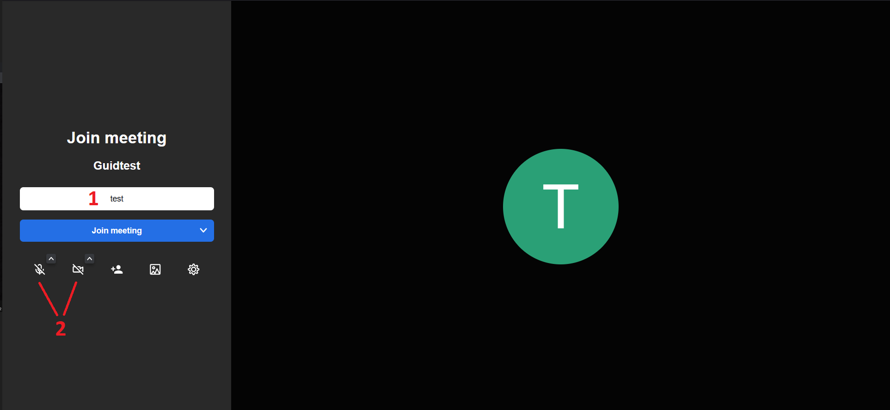
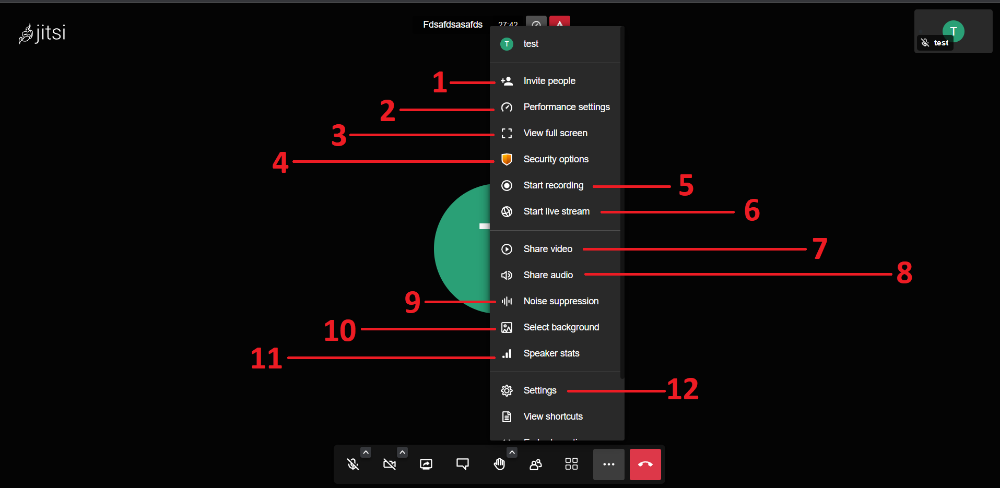
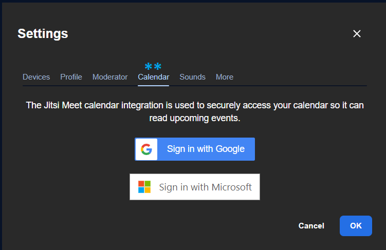

Jitsi || جيتسي
الاسم: جيتسي
المهمة: هو منصة آمنة ﻹجراء الإتصالات أو الإجتماعات
أنظمة التشغيل التي يعمل عليها: ويندوز، أندرويد، آيفون "IOS"
الثمن: مجاني
كيف يعمل؟
يؤمن جيتسي حماية البيانات حيث تكون البيانات المرسلة بين الطرفين مشفرة من قبل جيتسي
يمتاز برنامج جيتسي بالتالي:
- إنشاء قناة مشفرة للاتصال
- المجهولية: حيث لا يوجد حاجة لإنشاء حساب أو إدخال أية معلومات شخصية لإجراء محادثة
- يمكن إجراء المحادثة أو الإجتماع عبر متصفح الإنترنت بدون الحاجة لتنصيب التطبيق على الجهاز "يمكن تنصيب تطبيق "جيتسي" على اجهزة الكمبيوتر أو هواتف آندرويد و IOS"
يحتوى هذا الدليل على طريقة استخدام تطبيق جيتسي عن طريق المتصفح
-
الوصول إلى الموقع:
-
عن طريق الرابط هنا
تظهر الصفحة التالية، نضغط على:- نقوم بإدخال الاسم الخاص بالمكالمة أو الاجتماع الذي نريده، يمكن أن يكون أي اسم
- نضغط على بدأ الاتصال "Start Meeting"
-
عن طريق الرابط هنا
- تظهر النافذة التالية في أعلى شمال الصفحة، نضغط على "Allow" وتعني السماح للموقع بالوصول
إلى الكاميرا
والمايكروفون لاتمام المكالمة
 -
تظهر الصفحة التالية:
- نقوم بادخال الاسم الذي نريد الظهور به في المكالمة أو الاجتماع
- نتأكد أن المايكروفون والكاميرا في حالة الإغلاق كما في الصورة
- نضغط على "Join Meeting" للانضمام إلى المكالمة 
-
تظهر الصفحة التالية، وهي الواجهة الخاصة بالمكالمات في برنامج جيتسي

- نشرح في النقاط التالية أهم العناصر في هذه الواجهة
- في حال أردنا أن نغير الاسم الذي نظهر به
- للتحكم بالمايكروفون، فتحه أو إغلاقه
- للتحكم بالكاميرا، فتحها أو إغلاقها
- لمشاركة الشاشة الخاصة بنا بحيث يراها كل من في هذه المكالمة أو الاجتماع
- لفتح قائمة المحادثة "شات" مع الأعضاء المتواجدين في المكالمة
- لرفع اليد أو طلب الإذن للتحدث
- لرؤية الأعضاء المتواجدين في المكالمة
- لإظهار الأعضاء المتواجدين في المكالمة
-
عند الضغط على الثلاث نقاط تظهر القائمة التالية:

- "Invite people": لدعوة أشخاص جدد، تظهر النافذة التالية، عند نسخ اللينك الظاهر في النافذة
التالية وإرساله
إلى من نريده أن ينضم إلى المكالمة
- "Performance settings": لضبط خيارات الإتصال بحسب جودة الإنترنت
- "View full screen": فتح نافذة الاتصال بكامل الشاشة
- "Security options": للتحكم بإعدادت الاتصال، تظهر النافذة التالية
- "Enable Lobby": نفعل هذا الخيار، ويعني أن الأشخاص الجدد لا يستطيعون الانصمام إلى الاتصال إلى أن يسمح لهم مدير الاتصال، أو الأدمن
- "Add Password": نضغط على هذا الخيار، يظهر حقل إدخال خاص بإنشاء كلمة سر للإتصال، بحيث لا يستطيع أحد الانضمام إلى الاتصال إلا بإدخال كلمة السر هذه
- "Enabel End-to-End Encryption": تفعيل خاصية تشفير المكالمات، هذه الخاصية تحت التجربة من قبل شركة جيتسي وتعمل حاليا على المتصفحات فقط
نعود للقائمة السابقة - "Start recording": لتسجيل الاتصال وحفظه على الجهاز الخاص بنا
- "Start live stram": لبدء بث مباشر لهذا الاتصال وعرضه عن طريق يوتيوب
- "Share video": لمشاركة مقطع فيديو في الاتصال، نضغط على هذا الخيار، ثم ندخل لينك الفيديو ونضغط على "Share"
- "Share audio": لمشاركة مقطع صوتي في الاتصال
- "Noise suppression": لعزل الضوضاء
- "Select background": لتحديد صورة أو خلقية تظهر خلفنا عند فتح الكاميرا
- "Speaker stats": يمكن من خلال هذا الخيار، رؤية الوقت الذي تكلمت\تكلم فيه كم متصلة و متصل
- "Settings": اعدادات الاتصال، عند الضغط على هذا الخيار، تظهر النافذة التالية:
تحتوي على إعدادت عامة بالاتصال، يفضل تركها كما هي.- عند الضغط على "Profile" يمكنك تغيير الاسم الخاص بك في الاتصال في الحقل
الأول، وادخال
الايميل
الشخصي عند الحاجة في الحقل الثاني
-
"Moedrator": يمكنك تغيير بعض الاعدادات الخاصة بك كمدير للاتصال، مثل:
- الخيار “Everyone starts muted": عند تفعيل هذا الخيار (وضع علامة ✓)، فإن أي شخص تدخل أو يدخل غرفة المحادثة سيكون الميكروفون بحالة "كتم"
- خيار “Everyone starts hidden":عند تفعيل هذا الخيار، فإن أي شخص تدخل أو يدخل غرفة المحادثة ستكون الكاميرا بحالة "إغلاق"
- "Everyone follow me": عند تفعيل هذا الخيار، سيكون جميع المنضمين إلى الاتصال في حالة متابعة لك كمدير لهذا الاتصال
- "Mute reaction sounds for everyone": عند تفعيل هذا الخيار، يلغى صوت التفاعلات الخاصة بالمحادثة في الاتصال
- "Calendar":لربط التقويم عن طريق جوجل أو مايكروسوفت بتطبيق جيتسي، بحيث
ينظم مواعيد الاتصالات
ويضيفها إلى التقويم الخاص بك
 - "Sounds": خيارات خاصة بالأصوات في هذا الاتصال، لا مشكلة في تركها كما
هي
- "More":خيارات أكثر عن الاتصال، نتركها كما هي

- عند الضغط على "Profile" يمكنك تغيير الاسم الخاص بك في الاتصال في الحقل
الأول، وادخال
الايميل
الشخصي عند الحاجة في الحقل الثاني
- "Invite people": لدعوة أشخاص جدد، تظهر النافذة التالية، عند نسخ اللينك الظاهر في النافذة
التالية وإرساله
إلى من نريده أن ينضم إلى المكالمة